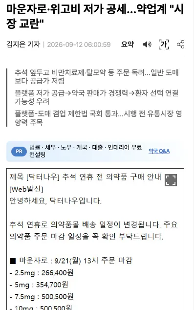
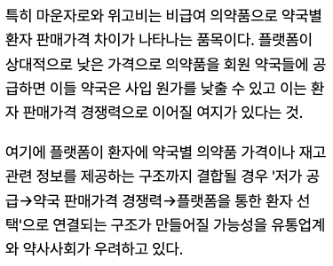

https://www.fmkorea.com/10332930812


약사들이나, 제약쪽 업계 카르텔이 참 심한듯함
싸게 들어오는 걸 기를 쓰고 막으려고 함
https://www.fmkorea.com/10332930812


약사들이나, 제약쪽 업계 카르텔이 참 심한듯함
싸게 들어오는 걸 기를 쓰고 막으려고 함
닥터나우는 의사든 약사든 적폐라고 정치공세 바이럴 엄청하더라 ㅋㅋ 이것도 바이럴일듯
바이럴 ㅂㅁ
근데 별로 안싸던디..
3대 쓰래기
의협
약협
유통협
정립
이게 어디봐서 의협 약협이 쓰레기야
본문내용이 뭔지도모르고 그냥 약만나오면 약협욕하고보는거임?ㅋㅋㅋ
이거 글쓴새끼도 뭔지도모르면서 그냥 약협욕하고자빠져있네 ㅋㅋㅋ
싸게들어오면 약사들은 판매가늘텐데 왜 싸지는걸막냐고 대답을해봐좀ㅋㅋㅋㅋ
제약사가 싸지면 이윤이없어지는거지
약사들은 도대체 사입가싸지면 좋으면좋지 뭐가안좋아서막는다생각하는건데 ㅋㅋㅋ
그럼 한국 약은 왜 비싼거고 왜 인터넷 구매도 안되는 거임?? 누군가 막는게 아니라 국민 대다수가 그렇게 하기로 합의 된거임?
비싼이유: 마운자로제약사 (외국)가 한국에비싸게파는거임
인터넷구매는 국민대다수 그렇게햇다고보는게맞지 국민이뽑은대통령국회의원이 법으로 처방전있어야하고 의약품은 인터넷구매가안되게 법을만든건데
아, 위고비, 마운자로, glp1형 치료제가 전부 비보험인것도 제약회사가 문제였던 거임?? 그건 몰랐네
비보험인건 건강보험에서 보험으로안해준걸껄
닥터나우가 의사약사 상대로 플랫폼 장사하려고 약자포지션잡고 ㅈㄴ까댐 개비호감ㅇㅇ
지나가는 경제학도입니다. 이걸 못하게 강제력을 행사하는 걸 '시장 교란'이라고 합니다.
이거 진짜 꾸준히 올리네 약사 카르텔이 아니라고 시발롬아 ㅋㅋㅋㅋㅋㅋ
검색하면 사입가도 다나오는 와중에 무슨 시발 사입가가 비싸게 팔아쳐먹는게 약사가 힘이센거냐?? 제약사가 로비를 잘하는거지
닥터나우 저새끼들은 진짜 계속 약사=적폐 몰고가려고하네 ㅋㅋㅋㅋ